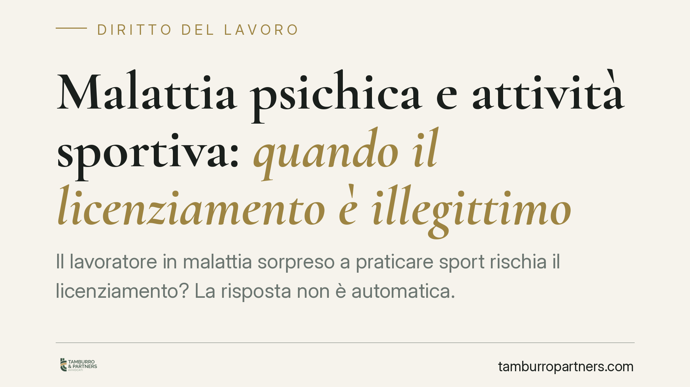

Malattia psichica e attività sportiva: quando il licenziamento è illegittimo
Il lavoratore in malattia sorpreso a praticare sport rischia il licenziamento? La risposta non è automatica. Per le patologie psichiche, l'attività fisica raccomandata dagli specialisti può favorire la guarigione anziché comprometterla. Il tema tocca il confine tra tutela della salute, buona fede contrattuale e potere disciplinare del datore. Un terreno dove la valutazione va fatta caso per caso.

Il caso e il problema di fondo
Un lavoratore assente per una patologia psichica viene visto praticare uno sport di squadra. Il datore contesta l'incompatibilità tra la malattia dichiarata e l'attività svolta e procede al licenziamento. È una situazione ricorrente nel contenzioso del lavoro, ma la sua soluzione richiede alcune distinzioni tecniche che spesso vengono trascurate.
Il punto non è se il lavoratore "si sia mosso" durante la malattia, ma se la sua condotta abbia leso gli interessi del datore in modo tale da giustificare la sanzione più grave.
Inquadramento normativo
La giusta causa di licenziamento è disciplinata dall'art. 2119 c.c.: legittima il recesso quando si verifica una causa che non consente la prosecuzione, nemmeno provvisoria, del rapporto. Sul datore grava l'onere di provare i fatti posti a fondamento del recesso, secondo la regola generale sancita dall'art. 5 della L. n. 604/1966.
La giurisprudenza distingue da tempo due ipotesi diverse. La prima è la simulazione della malattia: il lavoratore non è realmente malato e utilizza il certificato in modo fraudolento. La seconda è la condotta che pregiudica la guarigione: la malattia esiste, ma il comportamento tenuto durante l'assenza ne ritarda il decorso o mette a rischio il rientro. In entrambi i casi la Cassazione àncora l'illecito ai doveri di correttezza e buona fede nell'esecuzione del contratto (artt. 1175 e 1375 c.c.): il lavoratore assente deve adottare le cautele idonee a non compromettere il proprio recupero.
Va ricordato inoltre che il controllo del datore sulle assenze per malattia incontra i limiti dell'art. 5 della L. n. 300/1970 (Statuto dei lavoratori), che vieta gli accertamenti sanitari diretti e rinvia agli enti competenti.
Perché le patologie psichiche cambiano la prospettiva
Il ragionamento tradizionale è stato costruito guardando alle patologie fisiche. Per una frattura o una lombalgia, l'attività sportiva è tipicamente incompatibile con il riposo prescritto e può ragionevolmente ritardare la guarigione.
Per le patologie psichiche il quadro può ribaltarsi. In molti disturbi dell'umore o d'ansia, l'isolamento e l'inattività aggravano il quadro clinico, mentre l'attività fisica e la socializzazione rientrano tra le indicazioni terapeutiche degli specialisti. In questa cornice, praticare sport non solo non pregiudica la guarigione, ma può favorirla.
Alcune pronunce di merito hanno già valorizzato questa lettura, escludendo l'illecito disciplinare quando l'attività risulta coerente con il percorso di cura. Si tratta, allo stato, di orientamenti di merito che non costituiscono un principio consolidato: la decisione resta legata alla prova concreta della compatibilità terapeutica nel singolo caso.
Implicazioni pratiche
Per il lavoratore: la presenza di un certificato non basta a legittimare qualunque comportamento, ma nemmeno un'attività svolta durante l'assenza integra automaticamente un illecito. Ciò che conta è la coerenza della condotta con la patologia e con le prescrizioni mediche.
Per il datore di lavoro: la mera osservazione di un'attività fisica non è sufficiente a fondare il recesso. Occorre dimostrare che quella condotta abbia effettivamente pregiudicato la guarigione o riveli la simulazione della malattia. In assenza di tale prova, il licenziamento è esposto a un serio rischio di illegittimità.
Non esiste, dunque, né un divieto assoluto né un via libera generalizzato: la valutazione va sempre condotta caso per caso.
Cosa fare in concreto
- Lavoratore: conservate documentazione medica che attesti le prescrizioni ricevute, comprese eventuali indicazioni sull'attività fisica come parte del percorso terapeutico.
- Lavoratore: evitate condotte oggettivamente incompatibili con la patologia certificata; nel dubbio, chiedete un chiarimento scritto allo specialista.
- Datore: prima di contestare, verificate la reale incompatibilità tra la malattia e l'attività osservata, evitando automatismi disciplinari.
- Datore: rispettate i limiti dell'art. 5 dello Statuto sui controlli sanitari e documentate con precisione i fatti su cui si fonda l'eventuale recesso.
- Entrambi: rivolgetevi a un professionista prima di agire, perché l'esito dipende da elementi probatori specifici della singola vicenda.
Una prospettiva più ampia
Il tema segnala un'evoluzione culturale: la malattia psichica non può essere letta con gli stessi parametri di quella fisica. La tutela della salute e la funzione riabilitativa di certe attività impongono una valutazione differenziata, attenta alle indicazioni cliniche più che alle apparenze. È un terreno in cui il diritto del lavoro è chiamato ad aggiornare le proprie categorie.
Ogni storia di lavoro ha i suoi tempi.
Se gestisci HR e vuoi un confronto su contenzioso, ispezioni o licenziamenti, scrivi allo studio. Ti rispondiamo entro un giorno lavorativo.